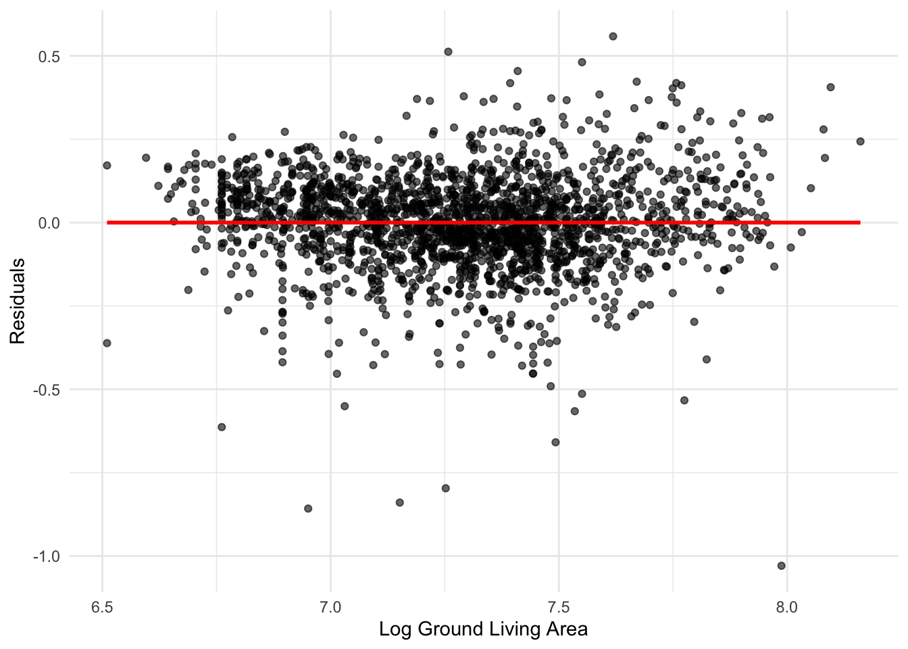
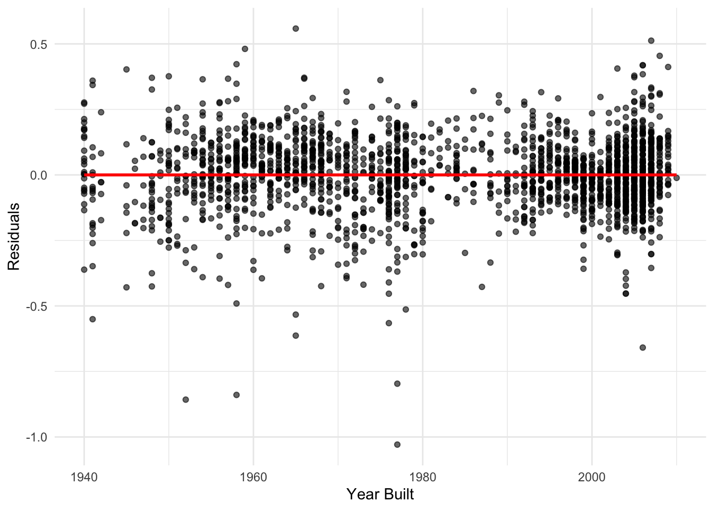
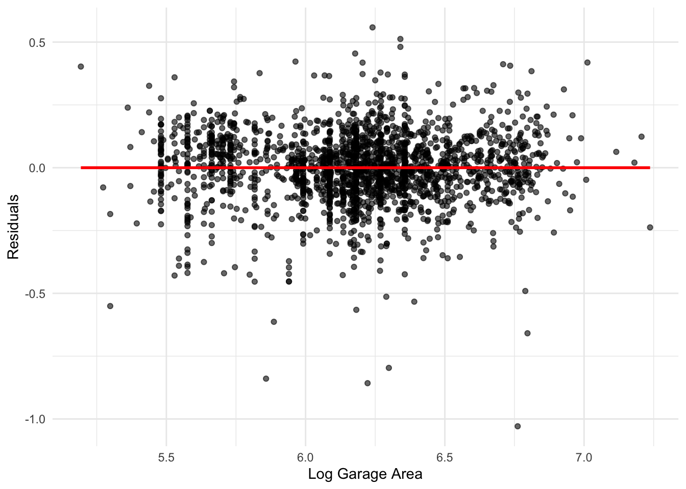
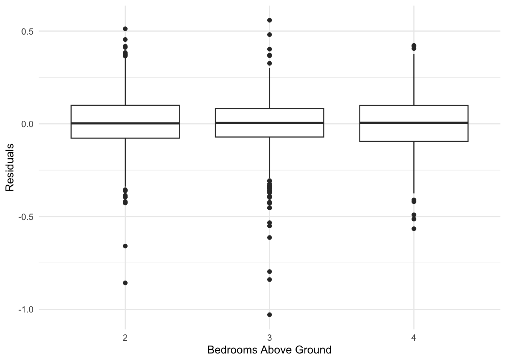
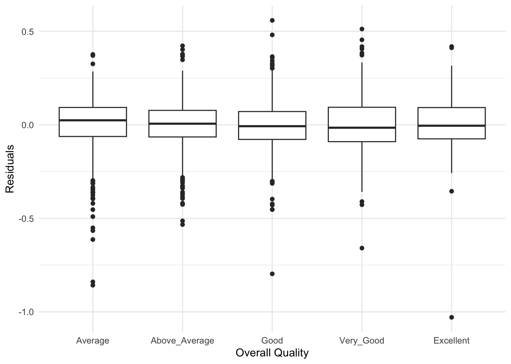
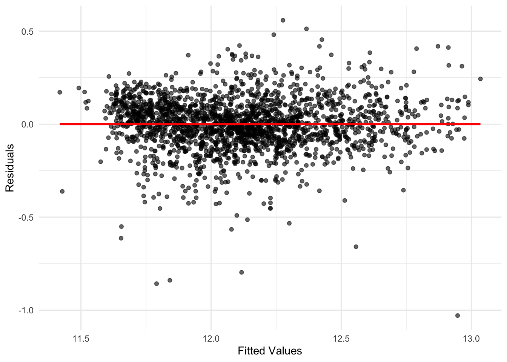
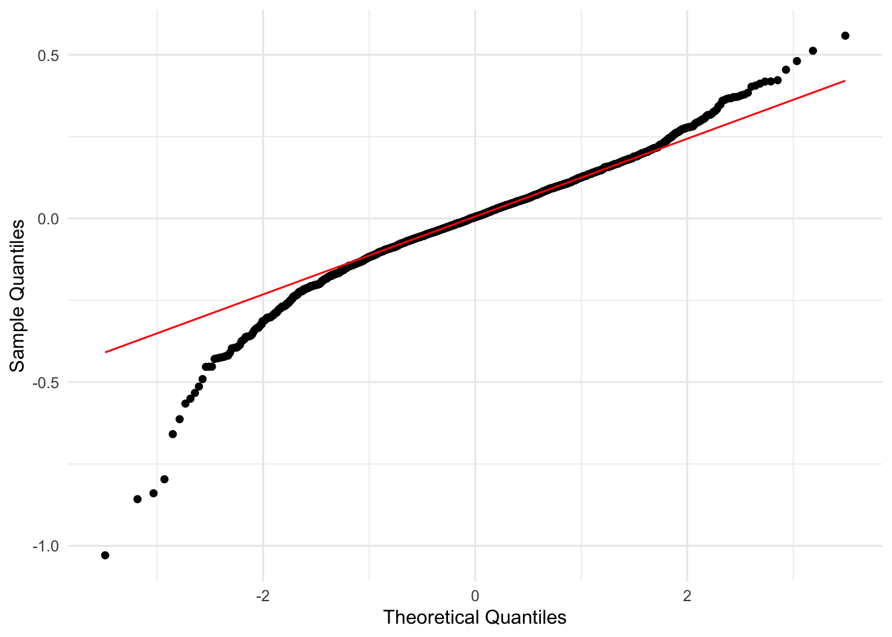
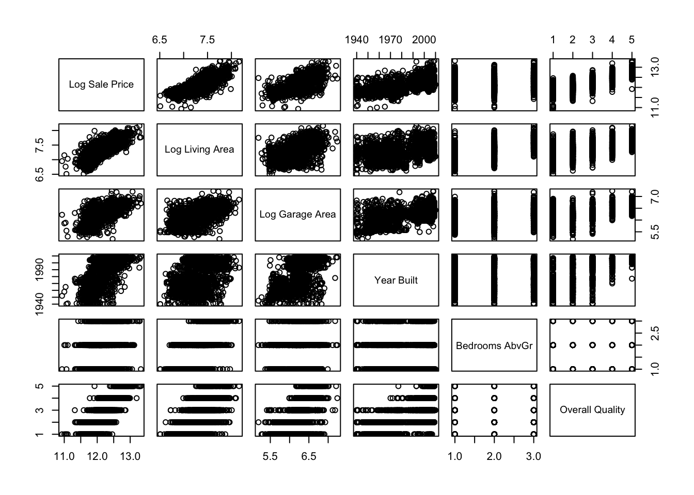
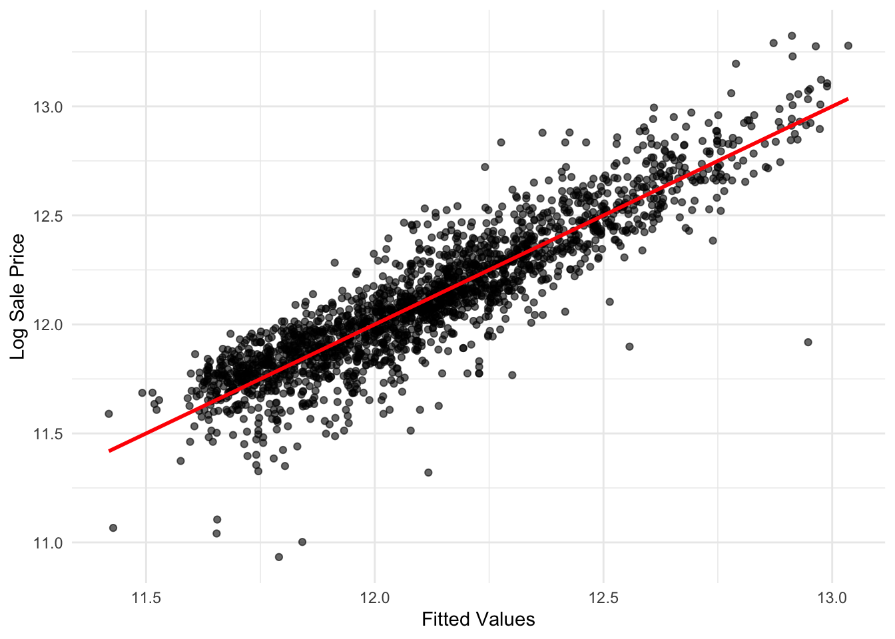

Analysis of Structural Housing Features and Sale Prices
Author
Andy Jiang
Published
May 22, 2025
Abstract
This paper analyzes housing sale prices in Ames, Iowa using multiple linear regression. The dataset is filtered to focus on homes with 2–4 bedrooms, built after 1940, and rated average to excellent in quality. Predictors include log-transformed ground living area, garage area, year built, number of bedrooms, and overall quality. Log transformations address skewness and heteroscedasticity. The final model achieves an R² of 0.819, with ground living area and overall quality identified as the most influential predictors. The results provide interpretable insights for investors, buyers, and policymakers.
1 Introduction
How do ground living area, garage area, year built, number of bedrooms, and overall quality influence the sales price of houses in Ames, Iowa?
The housing market significantly impacts financial stability and investment. The challenge many people face in finding affordable housing highlights the importance of understanding the factors that influence house prices. Given rising real estate costs, identifying factors influencing home values has become both timely and relevant. This study aims to analyze the key factors affecting housing prices in Ames, Iowa, focusing on attributes such as the number of bedrooms (two to four), garage area, ground living area, overall quality (average to excellent), and year built. The research question seeks to determine which housing attributes most significantly influence the sales price of homes in average to excellent quality grade with two to four bedrooms.
There are several peer-reviewed papers that have studied this topic. In Paper 1, Shukla demonstrated the effectiveness of multiple linear regression in predicting housing prices, listing property size and number of bedrooms as significant predictors, reflecting their intrinsic value and desirability. In Paper 2, Ye’s paper compared different predictive models specifically for Ames housing prices and identified overall quality of the house and living area as the most influential factors. In Paper 3, Han explored predicting house prices in Ames, Iowa with the same dataset using various advanced regression models and identified key features influencing house prices. They found overall quality of material and finish and year built to be the most significant variables, as well as garage area and ground living area to be significant variables. These studies support the selection of predictor variables and the use of linear regression for this analysis.
Previous research suggests that linear regression is an effective tool for examining the direct relationships between multiple predictors (such as housing attributes) and the response variable (sales price) (GeeksforGeeks). By modeling how factors like size, age, quality, and market trends affect house prices, linear regression quantifies these relationships and provides clear, interpretable coefficients. This makes it a widely used and suitable method for this study, aiming to offer insights into the factors that influence home prices in Ames, Iowa, with a focus on houses in average or above condition with at least two bedrooms.
2 Data Description
The dataset used in this analysis is from the Ames Housing data available through the AmesHousing R package (Kuhn and Johnson). Originally curated by Dean De Cock for use in data science education. The original dataset describes the sale of individual residential properties in Ames, Iowa, from 2006 to 2010 and includes 82 variables related to various attributes of each property.
The response variable for this study is the final sale price of each home. Since sales price is highly right-skewed, we apply log transformation to stabilize the variance and make the distribution suitable for regression analysis. This transformation is commonly used in price modeling to address issues related to non-normality and heteroscedasticity (Gupta).
Prior to log transformation, sale price is heavily right skewed. After the log transformation, sale price is more normally distributed.
According to Shukla, the predictor variables reflect the intrinsic value and desirability of the house, directly tied to the house’s sale price (Shukla, f749). These variables capture essential aspects of a property’s value and appeal, which are key determinants of its market price.
Boxplot for ground living area has a longer upper whisker and outliers extending further from the median, indicating right skewness. We applied log transformation to deal with the skewness, now the distribution looks more normal.
Garage area has a similar distribution as ground living area, showing a right skew. We again apply log transformation to address the same skewness issue. The normality of distribution is drastically improved.
Due to the discrete and linear nature of time, there seem to have high and low extremes which can possibly be explained by economic factors. However, the count differences do not necessarily heavily impact residual variances. Houses generally have 2–4 bedrooms above ground, and houses with 3 bedrooms above ground dominate.
Most houses have average to good quality grades, with a rare number of excellent grades.
3 Preliminary Model Results
We begin by loading the Ames housing data and applying transformations and filters to focus on homes with 2–4 bedrooms, built after 1940, and rated average to excellent in quality. The response variable, Sale Price, is log-transformed to address skewness. The predictors log ground living area and log garage area are also log-transformed to stabilize variance.
library(dplyr)
Warning: package 'dplyr' was built under R version 4.2.3
Attaching package: 'dplyr'
The following objects are masked from 'package:stats':
filter, lag
The following objects are masked from 'package:base':
intersect, setdiff, setequal, union
library(AmesHousing)library(ggplot2)
Warning: package 'ggplot2' was built under R version 4.2.3
The preliminary model output shows that most predictors are statistically significant. However, visual inspection of residual plots revealed patterns indicating potential violations of model assumptions such as heteroscedasticity.
# get residualsames_data$residuals <-resid(lm_model)# residual vs predictor plots# (to see non transformed version simply remove the 'log_' in x label)ggplot(ames_data, aes(x = log_Gr_Liv_Area, y = residuals)) +geom_point(alpha =0.6) +geom_smooth(method ="lm", se =FALSE, color ="red") +labs(x ="Log Ground Living Area", y ="Residuals") +theme_minimal()
`geom_smooth()` using formula = 'y ~ x'

ggplot(ames_data, aes(x = Year_Built, y = residuals)) +geom_point(alpha =0.6) +geom_smooth(method ="lm", se =FALSE, color ="red") +labs(x ="Year Built", y ="Residuals") +theme_minimal()
`geom_smooth()` using formula = 'y ~ x'

ggplot(ames_data, aes(x = log_Garage_Area, y = residuals)) +geom_point(alpha =0.6) +geom_smooth(method ="lm", se =FALSE, color ="red") +labs(x ="Log Garage Area", y ="Residuals") +theme_minimal()
`geom_smooth()` using formula = 'y ~ x'

# boxplot for categorical for better interpretationggplot(ames_data, aes(x =as.factor(Bedroom_AbvGr), y = residuals)) +geom_boxplot() +labs(x ="Bedrooms Above Ground", y ="Residuals") +theme_minimal()

ggplot(ames_data, aes(x =as.factor(Overall_Qual), y = residuals)) +geom_boxplot() +labs(x ="Overall Quality", y ="Residuals") +theme_minimal()

Clustering and skewness remained in the residuals, particularly in the lower value range. Additional plots, such as fitted vs. residuals and Q-Q plots, confirmed deviations from ideal assumptions, leading to further transformations and refinements in the next modeling stage.
# get fitted valuesames_data$fitted_values <-fitted(lm_model)# fitted vs residual plotggplot(ames_data, aes(x = fitted_values, y = residuals)) +geom_point(alpha =0.6) +geom_smooth(method ="lm", se =FALSE, color ="red") +labs(x ="Fitted Values", y ="Residuals") +theme_minimal()
`geom_smooth()` using formula = 'y ~ x'

# qq plot with qqline added for better visualggplot(data =data.frame(residuals =resid(lm_model)), aes(sample = residuals)) +stat_qq() +stat_qq_line(color ="red") +labs(x ="Theoretical Quantiles", y ="Sample Quantiles") +theme_minimal()

# pairwise plot for all predictorsplot_data <- ames_data[, c("log_Sale_Price", "log_Gr_Liv_Area", "log_Garage_Area", "Year_Built", "Bedroom_AbvGr", "Overall_Qual")]# rename the labelscolnames(plot_data) <-c("Log Sale Price", "Log Living Area", "Log Garage Area", "Year Built", "Bedrooms AbvGr", "Overall Quality")pairs(plot_data)

# fitted vs response plotggplot(ames_data, aes(x = fitted_values, y = log_Sale_Price)) +geom_point(alpha =0.6) +geom_smooth(method ="lm", se =FALSE, color ="red") +labs(x ="Fitted Values", y ="Log Sale Price") +theme_minimal()
`geom_smooth()` using formula = 'y ~ x'

These diagnostic results motivated the more refined model specification that follows.
4 Model Selection
[Content for this section continues below — to be added with the next update.]
5 Final Model Inference and Results
[Content for this section continues below — to be added with the next update.]
6 Discussion and Conclusion
[Content for this section continues below — to be added with the next update.]
7 Author Contributions
Haruka Suzuki
Writing, dataset research, peer-reviewed literature, introduction, data description, preliminary model results, model selection
Andy Jiang
Writing, R code (data filtering, diagnostics, modelling, transformations, plots and tables, summary statistics), preliminary model results, model selection, final model inference and results, discussion and conclusion
8 References
Kuhn, Max, and Kjell Johnson. AmesHousing: The Ames Iowa Housing Data. R Package Version 0.2.1, 2024. https://cran.r-project.org/web/packages/AmesHousing/AmesHousing.pdf.
Shukla, Shivani. “Predicting Housing Prices Using Multiple Linear Regression: A Comprehensive Analysis.” JETIR, vol. 11, no. 3, Mar. 2024. https://www.jetir.org/papers/JETIR2403593.pdf.
Ye, Qiongwei. “House Price Prediction Using Machine Learning for Ames, Iowa.” Proceedings of the 4th International Conference on Signal Processing and Machine Learning, 2024. https://www.ewadirect.com/proceedings/ace/article/view/11040/pdf.
Han, Yueting. “Price Prediction of Ames Housing Through Advanced Regression Techniques.” BCP Business & Management, vol. 38, 2023, Department of Statistics and Data Science, University of California, Santa Barbara. https://www.researchgate.net/publication/369437029_Price_Prediction_of_Ames_Housing_Through_Advanced_Regression_Techniques.
GeeksforGeeks. “Multiple Linear Regression Using R to Predict Housing Prices.” 10 Apr. 2023. www.geeksforgeeks.org/multiple-linear-regression-using-r-to-predict-housing-prices/.
Gupta, Shubham. “Building a California Housing Price Prediction Model Using Gradient Boosting and Feature Selection: A Comprehensive Guide.” NGAIF, 2024.